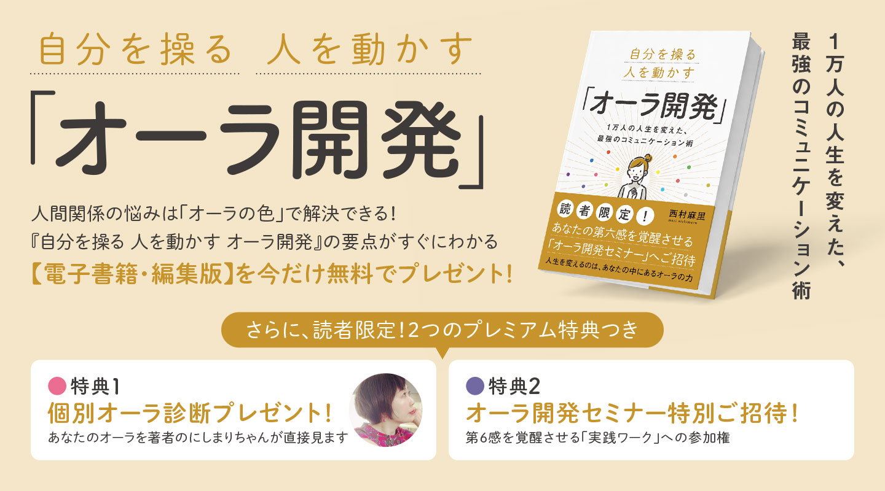
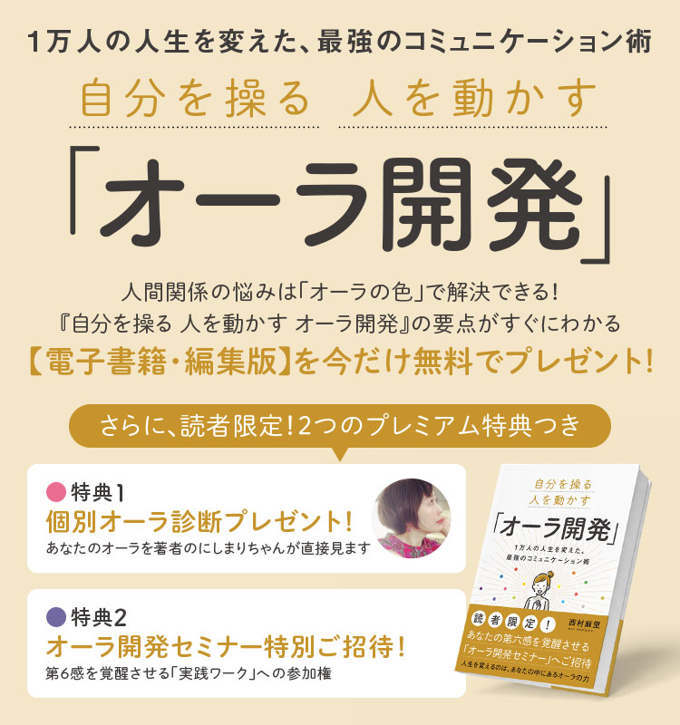

職場の人間関係に悩む会社員、セルフブランディングが必要な起業家、直感力を磨きたいビジネスパーソンへ。
「オーラの色」を知るだけで、仕事も、恋愛も、人生のすべてが驚くほどうまく回り始めます。
まずは無料の電子書籍で、あなたと周りの人の「オーラ」をチェックしてみませんか？
（※さらに、電子書籍を最後まで読んでいただいた方には
「特別なシークレット2大特典」もご用意しています！）


職場の人間関係に悩む会社員、セルフブランディングが必要な起業家、直感力を磨きたいビジネスパーソンへ。
「オーラの色」を知るだけで、仕事も、恋愛も、人生のすべてが驚くほどうまく回り始めます。
まずは無料の電子書籍で、あなたと周りの人の「オーラ」をチェックしてみませんか？
（※さらに、電子書籍を最後まで読んでいただいた方には
「特別なシークレット2大特典」もご用意しています！）
電子書籍をご覧いただいた方には、今だけ限定で
2大特典をご用意しています。
ぜひ今すぐお受け取りください！
もし一つでも当てはまるなら、
この電子書籍で解説している
「オーラ」という新たな視点が、
あなたの人生を劇的に変える
きっかけになります。
人の悩みの9割は「人間関係」。
それは単なる相性の悪さではなく、
「相手のことを理解しないまま
ぶつかり合っている」だけなのです。
今回プレゼントする電子書籍の「巻末ページ」には、読者様限定の公式LINEへつながるQRコードを掲載しています。
そちらからLINEにご登録いただくと、以下の豪華2大特典を完全無料でプレゼントいたします！
以下のボタンをクリック後、画面の指示に従って電子書籍をお受け取りください。
巻末の公式LINE案内も絶対に見逃さないでくださいね。
<注意>予告なく配布を終了する場合がございます。
お早めにお受け取りください。
巻末のLINE登録でお渡ししている「個別オーラ診断」は、私自身がお一人おひとりと真剣に向き合うため、対応できる枠に限りがございます。
読者の皆様からのお申し込みが殺到した場合、ご予約をお待ちいただく可能性もございますので、ぜひお早めに電子書籍をお受け取りいただき、巻末のLINEへご登録ください！